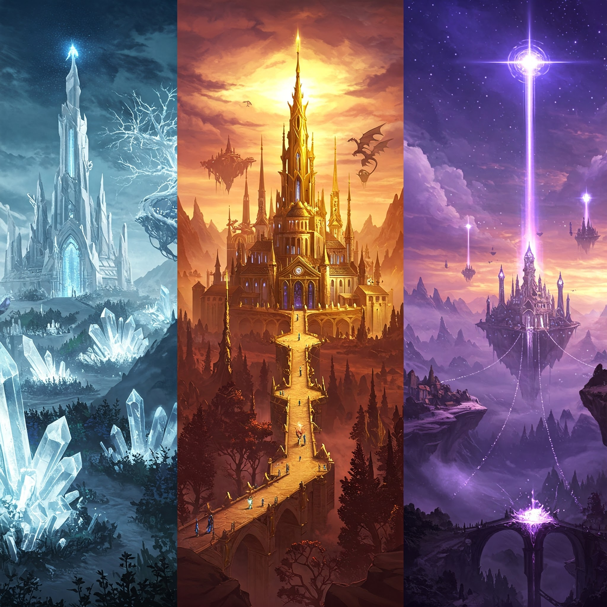
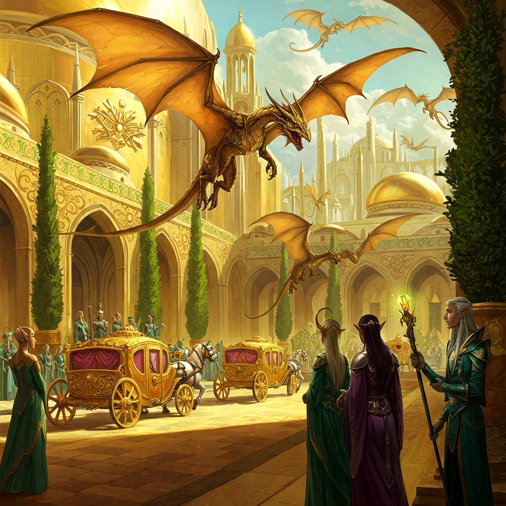
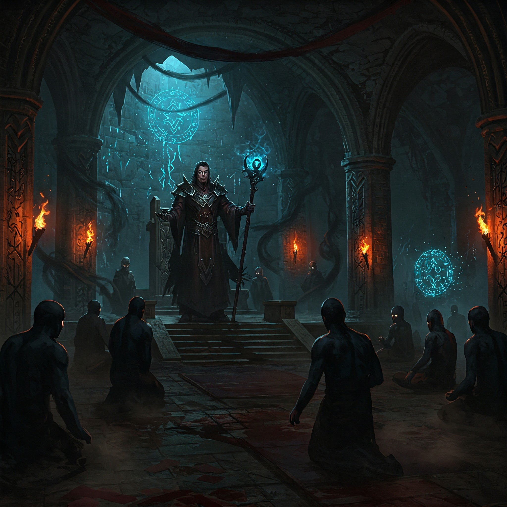
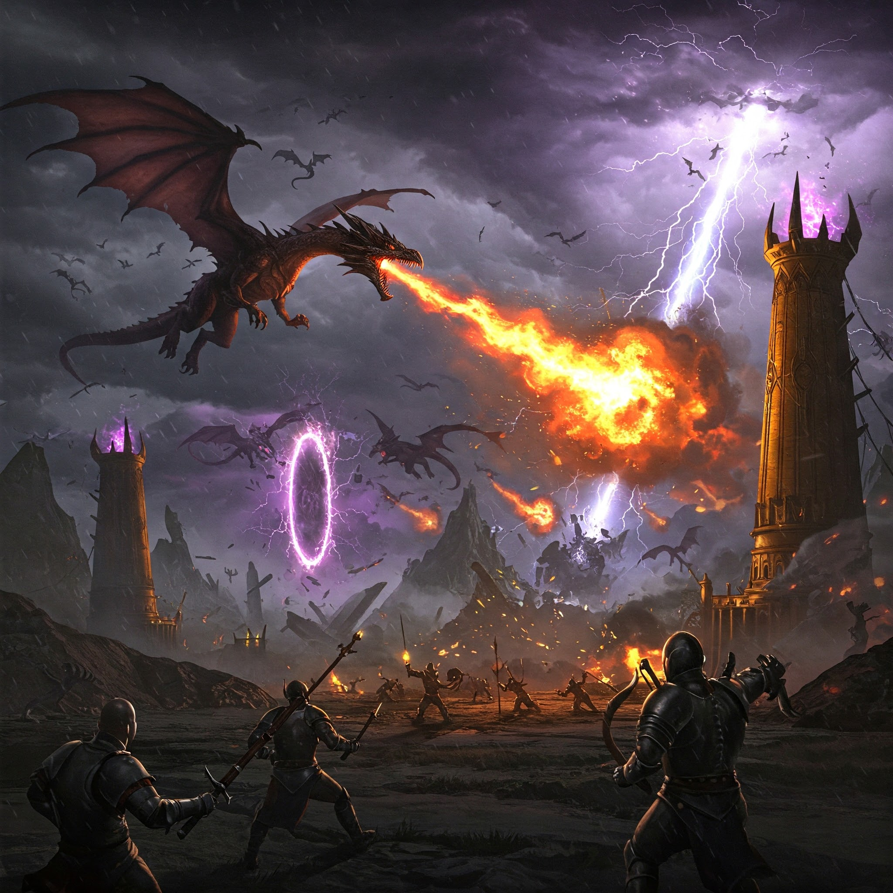
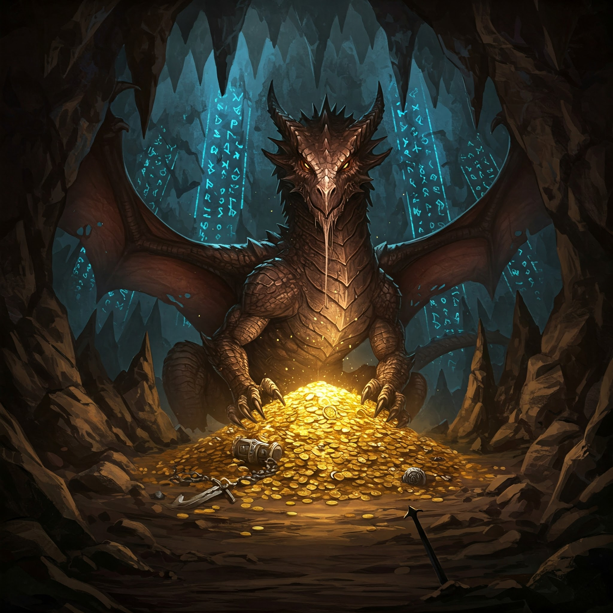

Capítulo 1: Los Tres Reinos
Hace doscientos mil años, cuando la magia fluía libremente por el mundo, tres grandes reinos coexistían en perfecta armonía...
Leer másEn las tierras del este, el Reino de los Elfos resplandecía con sus torres de cristal y jardines eternos. Sus construcciones se entrelazaban con árboles milenarios, y sus habitantes dominaban las artes de la naturaleza y la música. "Nuestro reino es el reflejo de la eternidad misma", decían orgullosos sus habitantes. Al oeste, el Reino de los Magos se alzaba majestuoso, con sus torres flotantes y puentes de luz. La magia pura emanaba de cada rincón, y sus bibliotecas guardaban secretos ancestrales. "El conocimiento es nuestro mayor tesoro", proclamaban sus sabios. Pero en el centro de todas las tierras, se erguía el más espléndido de todos: el Reino de los Humanos y Dragones. Sus edificios, bañados en oro puro, reflejaban la luz del sol como si fueran estrellas en la tierra. Los dragones, nobles y pacíficos, sobrevolaban la ciudad mientras los humanos trabajaban en armonía con ellos. "Juntos, humanos y dragones, hemos creado el más hermoso de los reinos", declaraba el Rey Aurelius, mientras observaba cómo sus súbditos y los dragones extraían oro de las profundidades de la tierra, transformándolo en obras de arte inigualables.
Capítulo 2: La Semilla de la Envidia
Durante los grandes festivales donde los tres reinos se reunían, las diferencias comenzaban a hacerse evidentes...
Leer másEn los grandes juegos interreinos, el esplendor del Reino Humano-Dragón opacaba a todos los demás. Sus participantes llegaban en carruajes de oro, sus dragones realizaban espectáculos de vuelo que maravillaban a todos, y sus regalos eran los más codiciados. Entre las sombras, el Archimago Magnor observaba con creciente amargura. "¿Por qué han de brillar más que nosotros?", susurraba a otros magos. "Su riqueza no proviene de la sabiduría ni del poder verdadero, sino de las bestias que han domesticado." Los elfos también comenzaron a murmurar. "Nuestros bosques eternos palidecen ante sus torres doradas", se quejaban. "¿Acaso la naturaleza vale menos que el metal?" Magnor sonreía en secreto, viendo cómo sus palabras envenenaban lentamente los corazones de ambos reinos. "El oro los ha cegado", decía, "y por oro caerán".
Capítulo 3: La Conspiración
En las profundidades del Reino Mágico, Magnor tejía su red de engaños...
Leer másMagnor convocó un consejo secreto en las catacumbas de su torre. "Los dragones son una amenaza", declaró ante los representantes elfos. "¿Qué pasará cuando decidan que ya no necesitan a los humanos? ¿Cuando vuelvan su poder contra nosotros?" Los rumores se esparcieron como veneno. En el Reino Élfico, los ancianos comenzaron a ver amenazas donde antes había amistad. En el Reino Mágico, los aprendices susurraban sobre conspiraciones de dragones. Mientras tanto, en el Reino Humano-Dragón, la vida continuaba en paz. Solo los dragones más antiguos percibían el cambio en el viento, el olor a traición que se acercaba. "Algo oscuro se aproxima", advertían, pero sus advertencias se perdían en el resplandor del oro.
Capítulo 4: La Caída
El día que el cielo se oscureció, el mundo cambió para siempre...
Leer másLas nubes negras cubrieron el Reino Humano-Dragón como un manto de muerte. Los ejércitos combinados de elfos y magos surgieron de portales oscuros, sus armas envenenadas con magia negra. La batalla fue devastadora. Los dragones, criaturas de paz, dudaron en usar su poder total hasta que fue demasiado tarde. "¡Defendamos nuestro hogar!", gritaban los humanos, montando a sus compañeros alados. Durante treinta días, el cielo ardió. El fuego de dragón se mezclaba con la magia negra, creando tormentas de poder que derretían el oro y abrían grietas en la tierra. Los elfos caían ante la furia draconiana, los magos se consumían en su propia oscuridad. Pero la victoria tuvo un precio terrible. El reino dorado se convirtió en ruinas, y algo más profundo se había roto: la pureza de corazón que caracterizaba a humanos y dragones.
Capítulo 5: La Maldición Eterna
En sus últimos momentos, Magnor dejó un legado de oscuridad que perduraría por milenios...
Leer másAntes de caer, Magnor pronunció su última maldición: "Que el oro que tanto aman sea su perdición. Que cada pieza de este tesoro corrompa el corazón de quien lo posea, que despierte la codicia más oscura, que destruya reinos y familias. Solo cuando llegue alguien que vea más allá del brillo del oro, que busque no poseer sino compartir, que entiende que la verdadera riqueza está en la unión de todos los pueblos, solo entonces esta maldición podrá romperse." Los dragones supervivientes, debilitados por la batalla y la oscuridad residual, tomaron una decisión. Esconderían el oro maldito en las profundidades de la tierra, protegiéndolo de aquellos que pudieran caer en su tentación. Hoy, solo queda un guardián: Drakorg, el último de los grandes dragones. Solo él conoce la verdadera naturaleza de la maldición y espera, paciente, a aquel corazón puro que pueda romperla. "El oro brilla", dice Drakorg a los pocos que logran encontrarlo, "pero su brillo es un espejismo que oculta la oscuridad más profunda. ¿Serás tú quien finalmente nos libere de esta antigua maldición?"